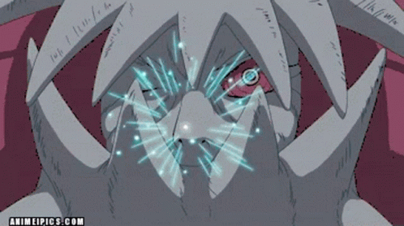
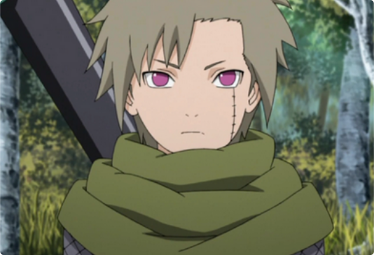

Isobu
Jinchūriki: YaguraIsobu (磯撫, Isobu), mais conhecido como o Três-Caudas (三尾, Sanbi), é uma das nove Bestas com Cauda. No passado, ele foi selado em Yagura Karatachi de Kirigakure. omo seus irmãos, Isobu não gostava de Kurama por sua arrogância e crença de que sua força se baseia em seu número de caudas, bem como tinha um grande respeito e admiração para com o Eremita dos Seis Caminhos, louvando-o por seus esforços para trazer a paz no mundo através da união das pessoas e nunca esquecendo suas palavras finais.
 Igual as demais Bestas com Cauda, Isobu também detinha um intenso ódio, hostilidade e desconfiança dos seres humanos devido aos séculos de escravidão e tratamento negativo que lhe impuseram. Isso é explorado no anime, onde a Tartaruga Gigante agiu de forma selvagem e agressiva com qualquer um que se aproximava dele através de rompantes furiosos além de apenas rugir de maneira animalesca
Entretanto, em sua reunião com Naruto com os outros jinchūriki e as Bestas com Cauda, Isobu fala de forma tímida, referindo-se a si mesmo como "boku" (ボク), que é normalmente utilizado por garotos. Ele também ficou visivelmente desconcertado e constrangido enquanto ouvia Yagura tentar chamar a atenção de Naruto. Referente a seu jinchūriki, o fato dele ter cooperado completamente com Yagura, indica que Isobu não é tão grosseiro ou franco quanto alguns de seus irmãos.
Yagura não apresentou nenhum tipo de frase que poderia ser marcada.
- Afiliação:Vila da Nevóa Oculta
- Caudas: Três Caudas
- Classificação: Besta com Cauda
- Família: Hagoromo Ōtsutsuki
- Jinchūriki: Yagura
- Estilo Água